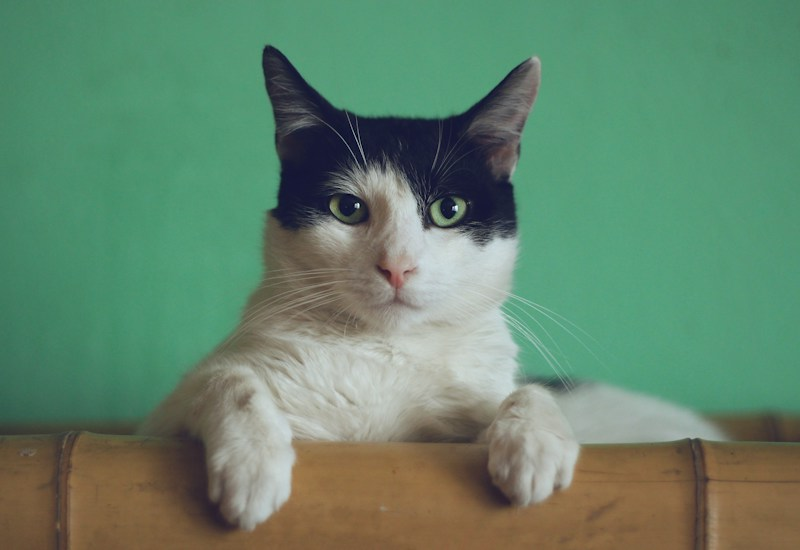
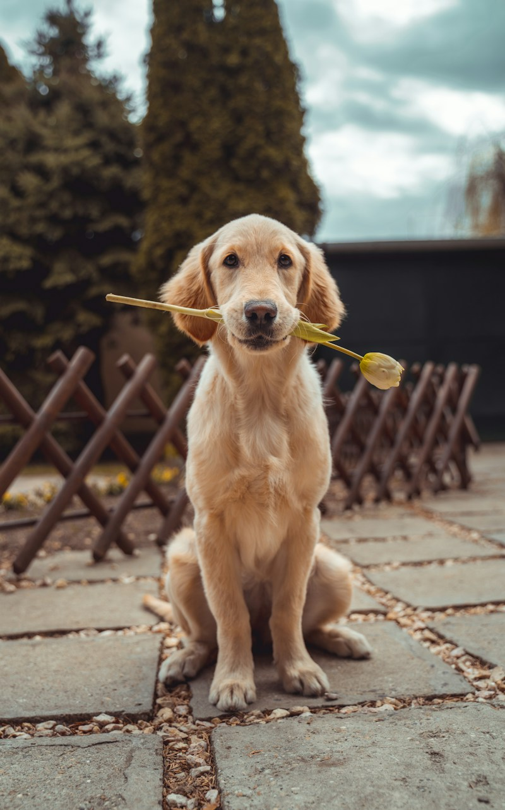

示範組織 ／ 臺北市
暖心動物之家
提供中途照護、醫療協助與認養媒合，陪伴毛孩準備好迎接新生活。
示範需求：日常照護 ／ 募集中
更新日期：2026 年 11 月 2 日
✳ 每一份關心，都能改變一個日常
在這裡，遇見等待被愛的牠們。
無論是領養、贊助，或是多一點關注，
都是陪伴牠們走向幸福的開始。
✳ 一個小小的選擇，就是牠們世界裡的大事。
關於毛日子 ／ 一起讓愛抵達
毛日子希望串起關心流浪動物的你，和默默付出的動物組織。讓每個需要幫助的故事被看見，也讓每一份溫柔，找到可以抵達的地方。
一起同行 ／ 讓善意被看見
因為有更多人願意看見，等待中的毛孩就多了一份希望。
以下數字為示範，尚未連接實際統計資料。
認識毛孩 ／ 從相遇開始
有些相遇，只差你多看一眼。
以下為示範資料，狀態與日期僅供展示。
合作組織 ／ 溫柔的守護者
組織贊助支持你選擇的合作組織，示範用途包括飼料、醫療與院區照護。
以下組織為示範資料。
示範組織 ／ 臺北市
提供中途照護、醫療協助與認養媒合，陪伴毛孩準備好迎接新生活。
示範需求：日常照護 ／ 募集中
更新日期：2026 年 11 月 2 日
示範組織 ／ 臺中市
關心街頭動物的日常，透過救援、照護與教育，為牠們創造更多可能。
示範需求：動物醫療 ／ 募集中
更新日期：2026 年 11 月 2 日
協會最新消息
管理組織照顧的毛孩資訊與照片。
支持毛日子 ／ 讓溫柔延續
平台維護贊助支持「毛日子」平台本身，預計用於網站維護與營運。
若想支持毛孩照護，請至上方合作組織選擇組織贊助。
示範需求：平台維護 ／ 募集中
更新日期：2026 年 11 月 2 日


平台贊助方案 ／ 一起讓溫柔延續
以下為單次贊助平台維護的示範方案，獎勵與金額尚未正式開放。
一份溫暖
支持平台日常維護，讓更多毛孩的故事被看見。
示範獎勵陪伴同行
支持平台內容整理與維護，陪伴更多相遇發生。
示範獎勵希望守護者
支持平台持續經營，讓善意有更長遠的力量。
示範獎勵此區支持平台維護；若想贊助毛孩照護，請至合作組織區選擇組織。以上獎勵僅供展示，尚未提供發送服務。
邀請組織加入
期待與更多動物組織同行，一起讓需要幫助的生命被看見。